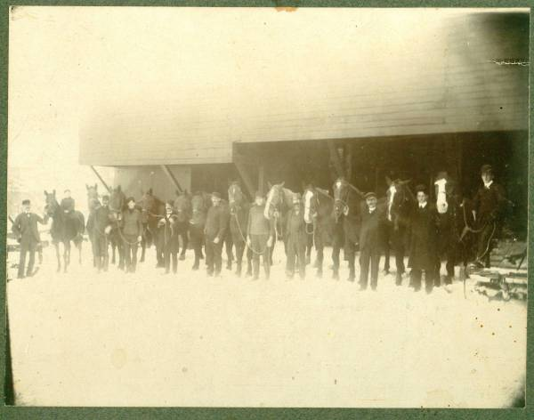

The Family Chronicle
No.39 April 26, 2003
__________

Here is another photo of men heading for, of in the woods, in the USA. I do not have a date or location but assume it is my father and his crew.
Follow-up
The woods story brought back remem- brances to Donald Edge and Shirley MacKay. Donald remembered working in his Grandfather’s sawmill pulling off the slabs and cutting them into firewood. By the end of the day, his hands would be nearly stuck shut because of the pitch from the wood. When Earl Taylor worked at Fowlies’s mill and stayed at home, he was also covered with pitch at the end of the day.
Donald also remembered the spruce gum, which was a ball of hardened sap of a spruce
tree. It was a real treat. Donald still has his fathers spruce gum box.
Shirley remembered going to the woods with her uncle, Johnnie MacKay. On the way home, she as allowed to sit on the load of logs. When her Uncle reached the yard, he had to go under the clothesline to where he was piling the wood. The clothesline caught Shirley, flipped her through the air into a snow bank. She survived without injury.
As a
follow-up to mention of family members in the USA, Tina Newton
thinks that Uncle George worked in both Tennessee and Virginia
(Hampton). A couple of people mentioned dancing the lancer at the
Black River Hall. Thanks to Donald Edge for pointing out that there
is an
Armstrong School in Hampton, Virginia but not in North
Haven Connecticut. That is more likely where my sister Grace went
to school.
The Woodcutter
Our family worked in the woods in the winter cutting furnace and firewood for the following winter. This allowed the wood to dry before it was burned. Sometimes they also cut logs for lumber. Most of our wood was cut on the “ridge”, a slight rise towards the back of the farm; hardwood needed dry ground. Our hardwood was mostly beech and maple with some birch. Trees were cut and hauled in long lengths on bobsleds and piled just above our house. Come late March, as I recall, the wood was blocked into 16-inch lengths for the stove and 24 inches for the furnace.
Not all families did this and they ended up burning green wood. The story is told that at one of the MacDonald’s, perhaps it was Aunt Kate Ken, didn’t have any wood to burn so she prepared the vegetables and set them on the stove. When her husband came home. There was no hot supper. From then on there was always dry wood to burn.
We had a woodcutter and engine; it may have been owned jointly with Uncle Jim Watling. The engine was a medium sized “one-lunger”, a single piston with a magneto to provide the spark. It was sometimes hard to start but I will say more about the engine another time.
The woodcutter was a frame about 8 or 10 feet long with a circular saw driven by a belt fastened to an engine. The saw turned very fast. Behind the saw was a table on which the long wood was placed and then pushed into the saw thus cutting it into short lengths. A wood cutter crew consisted of two people to throw blocks, three people to handle the wood on the table, two people at the woodpile bringing the wood forward and placing the butt end near the saw, and two people who lifted the logs and moved them forward to the table as they were needed. Some of our hardwood would have been 15 inches or more in diameter had to be turned to cut in from both sides. On some of the heavy sticks, the engine would slow down and the table had to be pulled back to let the saw gain speed.
Neighbours usually helped each other with the woodcutter. Sometimes extra men would be required. I remember being wakened about 6:30 am to go across the crust to Adams’ or Harper farm to see if we could get an extra person to help. Presumably the extra people were paid.
In 1947, I was teaching at Kouchibouguac and came home on a weekend when the woodcutter was at home. I was dragooned into throwing blocks all day. They were heavier than the pencil I was used to. I remember yet how sore I was the next day.
The Chronicle is an occasional newsletter published by Don Glendenning It is intended to solicit and provide information about family tree matters. Comments, enquiries and information may be sent to 62 Queen Elizabeth Drive, Charlottetown, PEI, C1A 3A9. Tel: 902-892-5859 Email: dglende @attglobal.net. Feel free to make and pass along copies of this newsletter.